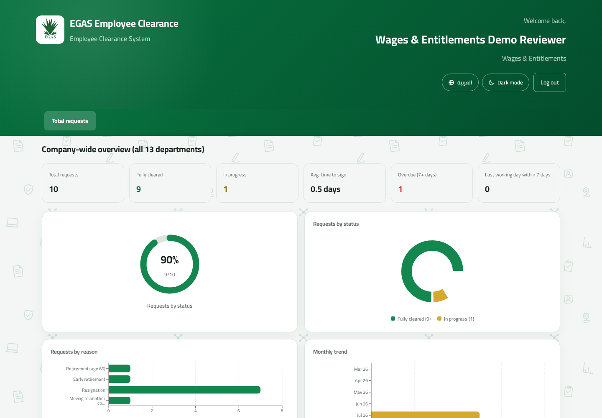

Engineering Guide · Version 2.0
Technical & Architecture Documentation
Architecture, data model, business rules, APIs, extension points, operations, and safe change procedures.
Architecture, data model, business rules, APIs, extension points, operations, and safe change procedures.
This guide is for developers and database/operations staff who need to understand, maintain, extend, or troubleshoot the application. It is based on the live repository and running local instance—not a generic template.
| 1. System overview and architecture | Orientation |
| 2. Repository map and runtime | Developers |
| 3. Relational data model | Backend / DBA |
| 4. Business rules and authorization | All maintainers |
| 5. API and request lifecycle | Backend / integrations |
| 6. Frontend architecture | Frontend |
| 7. PDFs and evidence storage | Backend / operations |
| 8. Safe change recipes | Feature work |
| 9. Deployment, testing, and recovery | Operations |
| 10. Risks and maintainer checklist | Owners |
The system digitizes EGAS employee clearance. A React single-page application calls an Express JSON API. Express authenticates JWTs, enforces role and department boundaries, stores relational state in PostgreSQL through Sequelize, stores uploaded evidence on disk, and generates a composited clearance PDF from an official template.
| Layer | Technology | Responsibility |
|---|---|---|
| Frontend | React 18, Vite, React Router, Axios, Recharts | Role dashboards, forms, analytics, previews. |
| Localization | react-i18next | Arabic-first bilingual UI and RTL direction. |
| Backend | Node.js, Express 4 | REST API, validation, business logic, file delivery. |
| Authentication | JWT, bcryptjs | Email/password login and password re-authentication. |
| Database | PostgreSQL, Sequelize | Users, templates, request snapshots, status/audit data. |
| Evidence/PDF | multer, pdf-lib, fontkit, canvas/image codecs | Upload validation, preview, template compositing. |
Node.js 18+ and a reachable PostgreSQL instance are required. Never commit backend/.env or production credentials.
The application migrated from MongoDB to PostgreSQL while preserving the old nested request shape through requestAssembly.js. Natural keys are retained: user email is users.userID; department key is departments.key; requests use UUIDs.
| Table | Purpose and important fields |
|---|---|
| departments | Live 13-department template: bilingual names, order, tier, oversight flag, signature mode. |
| department_checklist_items | Live template for IT’s five itemized requirements. |
| users | Email PK, bcrypt hash, role, department assignment, optional IT item assignment, phone, forced-reset flag. |
| clearance_requests | Employee/departure facts, creator, overall status, File Management approval, access-removal audit fields. |
| request_departments | Per-request snapshot of every department plus signature, evidence metadata, signer identity, time, and oversight notes. |
| request_items | Per-request IT checklist snapshot plus item-level signature/evidence metadata. |
On creation, department names, order, tier, signature mode, and checklist items are copied into request-owned rows. Later template changes affect only future requests. Do not “simplify” reads by joining live department configuration into historical requests.
| Role | Route/data boundary |
|---|---|
| file_management | All request summaries/evidence; create, reopen, approve, delete completed requests, PDF. Signer identity is redacted. |
| reviewer | Own department only, except Wages/Finance oversight. IT receives safe readiness flags. |
| admin | Manage only file_management and reviewer users; no request access. |
| super_admin | Manage only admin users; no request access. Exactly one account, created only through empty-database setup. |
Authorization is server-enforced. Frontend route guards improve UX but do not constitute security. JWT payloads identify the user, role, department, assigned IT item, oversight status, and forced-password-reset state.
All application routes are under /api. The frontend Axios client uses relative URLs and attaches Authorization: Bearer <token> from local storage.
| Method/path | Purpose / principal authorization |
|---|---|
| GET /health | Process health check. |
| POST /auth/login | Public credential exchange. |
| GET /auth/setup-status POST /auth/setup | Public first-run check; setup creates the sole Super Admin only when user count is zero. |
| GET/POST /auth/accounts | Admin/Super Admin, filtered by manageable roles. |
| POST /auth/reset-password POST /auth/delete-account | Admin/Super Admin with role boundary and re-authentication. |
| POST /auth/set-new-password | Authenticated temporary-password replacement. |
| GET /departments | Public template data for setup/account forms. |
| GET /departments/coverage | Coverage gaps: missing admin, File Management, reviewers/items. |
| POST /requests | File Management creates request and snapshot rows. |
| GET /requests GET /requests/:id | Role-scoped listing/detail. |
| POST /requests/:id/sign | Standard reviewer sign-off plus evidence upload. |
| POST /requests/:id/items/:itemKey/sign | IT item sign-off plus evidence upload. |
| POST .../reopen | Authorized reviewer or File Management clears sign-off/evidence. |
| POST /requests/:id/approve | File Management evidence approval. |
| POST /requests/:id/revoke-access | IT final action; computes completed status. |
| GET /requests/:id/evidence/... | Permission-checked evidence streaming. |
| GET /requests/:id/pdf | Permission-checked generated clearance PDF. |
App.jsx defines public routes and four protected dashboards. RequireRole redirects unauthenticated users, forces temporary-password replacement, and prevents wrong-role rendering.

The actual reviewer UI illustrates shared tables, charts, localization, and role-driven presentation.
Every new user-facing string belongs in both frontend/src/locales/en.json and ar.json. Test English and Arabic, including RTL alignment, long labels, tables, modals, and charts. Avoid embedding English strings directly in components.
Evidence is stored under backend/uploads/<requestId>/. The database stores URL, MIME type, and original name, while protected endpoints decide whether the current user can fetch the file.
Reviewer sign routes use multer disk storage and accept JPG, PNG, and PDF evidence. Validation must remain synchronized between frontend guidance, multer’s filter/limits, preview support, seed data, and PDF compositing.
backend/src/services/clearancePdf.js loads the official form, embeds Cairo fonts for Arabic and Latin text, processes evidence images/PDFs, places signatures in department-specific coordinates, and returns the generated bytes. Do not replace the form without verifying dimensions and every placement coordinate.
Update the PostgreSQL enum, login token payload, middleware, route guards, data projections, dashboard routing, account-management hierarchy, coverage checks, translations, tests, and documentation. Begin with server-side authorization; UI visibility comes afterward.
| Need | Preferred method | Avoid |
|---|---|---|
| Create/reset/delete a user | Admin/Super Admin UI or authenticated API. | Direct SQL that bypasses hashing, role rules, or audit intent. |
| Change department templates | Edit source-of-truth data and run the idempotent upsert. | Editing historical request snapshot rows globally. |
| Delete a clearance request | Authorized File Management action on a completed request, which handles DB and upload directory. | Deleting only the database row or only upload files. |
| Correct evidence | Reopen the department/item, then re-sign. | Replacing a file directly on disk. |
| Correct historical production data | Approved, backed-up, transaction-wrapped migration with verification. | Ad hoc SQL in a live shell. |
Use a maintenance window for material changes. Take a tested backup, record affected primary keys and expected counts, and keep rollback steps. Never edit passwordHash manually; use application reset flows.
The smoke test creates throwaway accounts and requests and exercises role boundaries and the end-to-end transition. Never aim destructive or load-oriented scripts at production without explicit review.
A complete backup consists of the PostgreSQL database, upload directory, deployed code revision, official PDF template, and environment/configuration kept in an approved secrets system. Restore into an isolated environment and verify evidence preview and PDF generation—not just row counts.
| Risk | Why it matters | Mitigation |
|---|---|---|
| Sole Super Admin lockout | No other role can reset it. | Secure credential escrow and tested organizational recovery procedure. |
| Automatic schema alteration | sync({alter:true}) can make production changes at startup. | Backups, staging rehearsal, controlled Node/Sequelize versions; consider formal migrations. |
| Filesystem evidence | DB-only backup is incomplete; horizontal scaling needs shared storage. | Joint backups; persistent protected volume; consider object storage if scaling. |
| JWT in localStorage | XSS would expose session tokens. | Strong CSP/input hygiene; avoid unsafe HTML; consider secure HttpOnly cookies in a future security hardening project. |
| Public contact/setup endpoints | Intentional unauthenticated surface. | Keep returned fields minimal; setup must re-check zero users atomically. |
| Documentation drift | Fast-changing rules can make procedures unsafe. | Update README, CLAUDE.md, PROJECT_STATUS, tests, and manuals in the same change. |